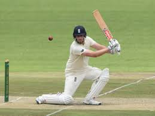

Cricket is a bat-and-ball game played between two teams of eleven players on a field at the centre of which is a 20-metre (22-yard) pitch with a wicket at each end, each comprising two bails balanced on three stumps. The batting side scores runs by striking the ball bowled at the wicket with the bat, while the bowling and fielding side tries to prevent this and dismiss each player (so they are "out"). Means of dismissal include being bowled, when the ball hits the stumps and dislodges the bails, and by the fielding side catching the ball after it is hit by the bat, but before it hits the ground. When ten players have been dismissed, the innings ends and the teams swap roles. The game is adjudicated by two umpires, aided by a third umpire and match referee in international matches. They communicate with two off-field scorers who record the match's statistical information. There are various formats ranging from Twenty20, played over a few hours with each team batting for a single innings of 20 overs, to Test matches, played over five days with unlimited overs and the teams each batting for two innings of unlimited length. Traditionally cricketers play in all-white kit, but in limited overs cricket they wear club or team colours. In addition to the basic kit, some players wear protective gear to prevent injury caused by the ball, which is a hard, solid spheroid made of compressed leather with a slightly raised sewn seam enclosing a cork core which is layered with tightly wound string. Historically, cricket's origins are uncertain and the earliest definite reference is in south-east England in the middle of the 16th century. It spread globally with the expansion of the British Empire, leading to the first international matches in the second half of the 19th century. The game's governing body is the International Cricket Council (ICC), which has over 100 members, twelve of which are full members who play Test matches. The game's rules are held in a code called the Laws of Cricket which is owned and maintained by Marylebone Cricket Club (MCC) in London. The sport is followed primarily in the Indian subcontinent, Australasia, the United Kingdom, southern Africa and the West Indies, its globalisation occurring during the expansion of the British Empire and remaining popular into the 21st century.[1] Women's cricket, which is organised and played separately, has also achieved international standard. The most successful side playing international cricket is Australia, which has won seven One Day International trophies, including five World Cups, more than any other country and has been the top-rated Test side more than any other country.
 FootballFor more info about Football click on the link above to open in new tab
CricketFor more info about Cricket click on the link above to open in new tab
Field hockeyFor more info about Field-Hockey click on the link above to open in new tab
TennisFor more info about Tennis click on the link above to open in new tab
VolleyballFor more info about Volleyball click on the link above to open in new tab